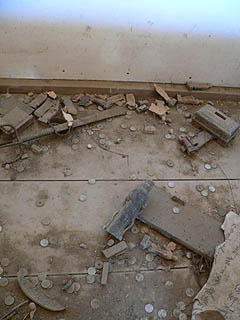
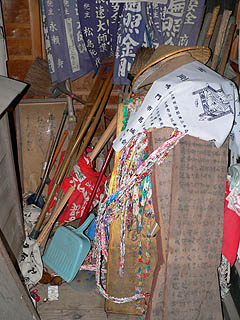

平等寺/徳島県阿南市
今回はうず潮に迎えられながら鳴門海峡を越え徳島県に見参である。
徳島在住の日本すきま漫遊記のへりおすさんと合流し、徳島市から南へ南へとある寺（察しの良い方ならどこだか判りますよね）へと向かう。
道中、阿南市の平等寺に寄ってみた。まあ、二人とも目的地に直行出来るタチじゃないもんですから。
平等寺は八十八カ所霊場という四国全体を覆う大きな時計回りのモーメントの22番目のチェックポイントである。
札所であると同時に足の神様としても名高いというハナシを聞き付けて寄った次第。
境内にはお遍路さんの姿がチラホラ。札所の中では大きくもなく小さくもなくまあ、平均的な規模のお寺なのだろう。
それでも門前では農作物などを売っていて結構お遍路さんが買っていったりしている。
境内には一般の参拝客はあまり多くないが、それでもお遍路さんが絶え間なく来る感じですね。
で、山門を潜ってすぐ左にある十王堂。
横長の建物の中にズラッと十王像が並ぶ。そしてお堂の右側だけは別部屋になっており（引き戸が嵌められている部分）、そこにはなぜか大量のお地蔵さんのミニチュアがうずたかく積まれていた。
堂内のホコリのつもりっぷりからほとんど放置状態のように思える。
少なくとも四国札所の境内にあるお堂としてはかなり寂しい状態といえよう。

床に散乱したお賽銭とお地蔵さんがかなり切なかったです・・・
さて。
気を取り直して先に進もう。
弘法の霊水で万病に御利益あり、といわれる水が滾々と湧いていた。
この井戸の上に祠を設けるカタチは次に訪れた薬王寺でも見かけたのだが四国ではポピュラーなのだろうか。
さて石段を登り、本堂に着く。中々立派な本堂だ。
本堂の周囲にはお守りや千羽鶴、千社札などが沢山奉納されている。
この辺、最上三十三観音を思いださせる。病気に御利益あり、のお寺には民間信仰パワーが集中する傾向がある。
というか、そもそも「この寺に行けば病気が治る」というスタンスが民間信仰そのものだったりもする。
本堂の中に見なれない犬小屋のようなモノが３つ並んでいた。
最初は奉納した札などを収納する、ゴミ箱のようなモノかと思ったが、納経所の方に聞いたら、いざり車なのだという。失礼しました。
いざり車といえば昔の足の不自由な方が使っていた車椅子の原型のようなもので一般的には台車のような形状だが、ここのはお遍路さん仕様。
屋根が付いていてまるで小さな家のようないでたちだ。
そのようないざり車が３台も奉納されているということは、交通事情の悪い昔から相当の数のいざり車が遍路道を走行していたという事なのだろうか。
松葉杖や義足、ギブスやコルセットが奉納されているのはたま〜に見かけるが、さすがにコレだけ大掛かりないざり車が３台も奉納してあるところは初めて見た。
このいざり車を見かけたら地元の人達は隣のムラまで送るという習わしがあったそうだ。
今ではバスや自動車でお気楽に廻れるが、かつては死に行く覚悟で廻った四国八十八カ所巡礼。
そのハードな行程をこの小屋のようないざり車に乗って巡礼していた姿を想像するだけで身も震える。
四国遍路に駆ける想いの壮絶さたるや、お気楽に車でぶぴゃ〜っと来てちゃっちゃっと参拝しているワタシなんぞ申し訳なさ炸裂である。
例えばこの寺ひとつにしたって本堂に辿り着くまでに上記の階段を登らねばならないのだから。
・・・このいざり車、足腰が治って必要がなくなって奉納されたものなのか、それとも満願を果たす事なくこの小さな小屋の中で亡くなった者への供養なのか・・・
頼むから前者であってくれ！

いざり車の奥にはこれも足が治ったお礼なのだろうか、松葉杖も奉納されていた。・・・のだが、ホウキとかチリトリとかと一緒に立てかけられて雑然としてました。
コレは・・・あ、お掃除祈願の奉納って事？な訳ないか・・・
おまけ
薬王寺/徳島県日和佐町
ついでに23番札所、薬王寺にも寄って来たよ。
 平等寺からさらに南下すると眩しい位に立派な塔が見えてくる。
この寺は先程のひなびた札所とは違い年間参拝者100万人以上のガンガンバリバリのメジャー寺院。
門前にもたくさんの店が並び、大勢の人が押し寄せている。うむむ・・・
平等寺からさらに南下すると眩しい位に立派な塔が見えてくる。
この寺は先程のひなびた札所とは違い年間参拝者100万人以上のガンガンバリバリのメジャー寺院。
門前にもたくさんの店が並び、大勢の人が押し寄せている。うむむ・・・
かなり変わったカタチの塔だとは思うが、かといって屋根だけがぐるぐる回ったり、時間で上下したりする訳ではないし、見たところ最近建てられたような塔なので過大な期待は慎みつつ、でも少しだけ期待しつつ境内に入る。
境内には厄を落す厄除坂がある。
この階段の一段一段に賽銭を置いていく事で厄を落すのだという。
階段に置かれている小銭を見ると思わず拾いたくなってしまう自分の貧乏性に気付き、かなり悲しい思いをした。
それにしてもこのお賽銭、どうやって回収するんでしょう？
一個一個拾っていたら腰を悪くしそうだし、やっぱり上からホウキでガバーっと掃いちゃうんでしょうか。皆さんが落していった厄を。
坂を登り切ると海が見える。いい眺めだ。
で、瑜祗塔と呼ばれる多宝塔に。
この塔は四国八十八か所開創1150年を記念して昭和38年に建立されたものだそうな。
内部は一階の四角い部分に五智如来像があり、その左右には回り階段が配されている。
二重螺旋階段という程でもない半端な階段で、二階は資料館のような感じ。
大正時代の立派な船の模型が奉納されていた。
二階の円筒形の部分は亀さんが支えてました。
地下は戒壇巡りになっている。
比較的新しい建物なのですっきりめの戒壇巡りだったが、そもそも戒壇巡りがあるとは予想していなかったので何だか得した気分である。
ああ、そんなところも貧乏性・・・
2006.5.
珍寺大道場 HOME